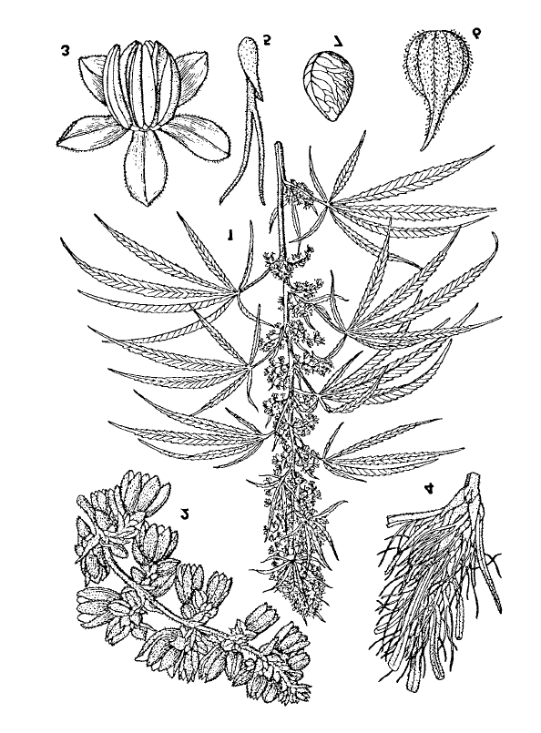
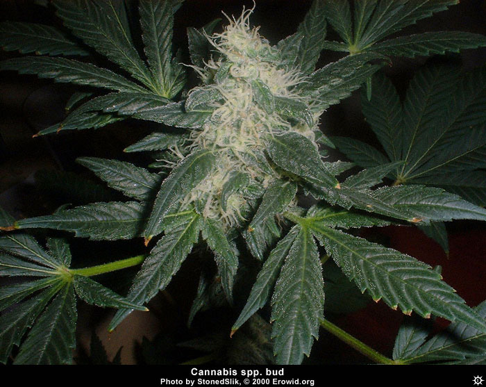
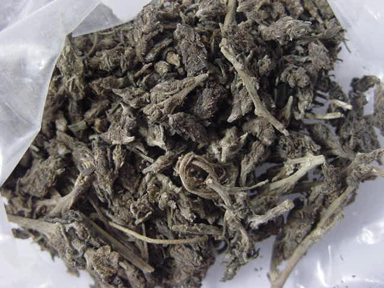
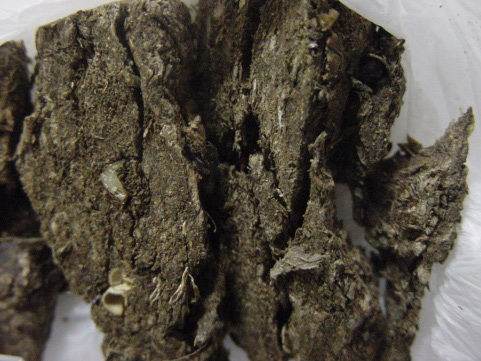
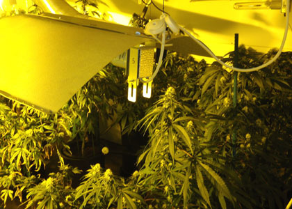
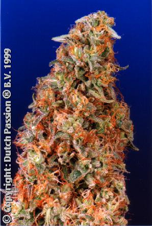
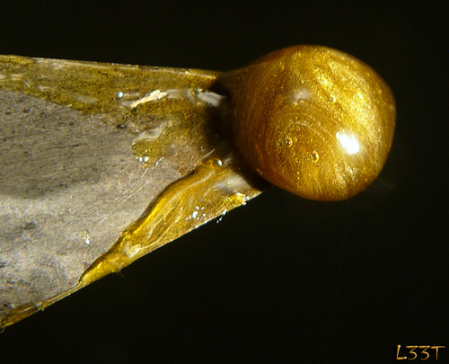
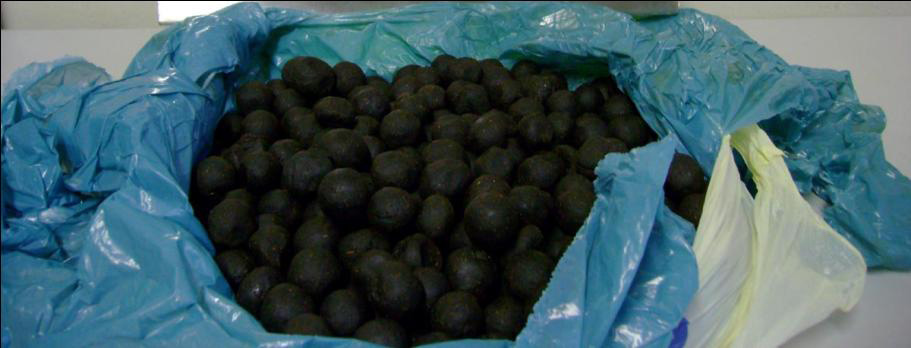
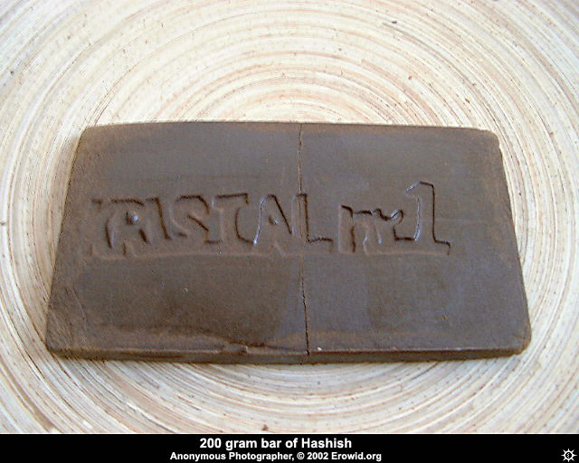

Nesta seção, serão abordadas as drogas de origem natural, presentes no vegetal conhecido como maconha, que possuem efeitos específicos no SNC, que vão do relaxamento à paranoia, dependendo da dosagem dos compostos psicoativos.


Fig. 5 - Folhas de maconha.
É uma planta nativa da Ásia, sendo também cultivada na África, Índia e em outros países de clima tropical ou temperado, tais como Brasil, Colômbia, México, Paraguai e países do Oriente Médio (Turquia, Irã e Arábia). Devido ao aperfeiçoamento de técnicas de cultivo do tipo indoor (em estufas, galpões, prédios e até mesmo em armários de residências), o cultivo de maconha se espalhou em praticamente todos os países do mundo. A maconha também é denominada cânhamo ou cannabis. Recebe ainda diversos outros nomes, como: diamba, erva, dirijo, riamba, gererê, bagulho, pereré, ópio-do-pobre, namba, malva, mato-louco, marola, maringonga, madeira e pango. Fora do Brasil, o vegetal pode receber outros nomes, entre eles: mara suana, marihuana, donajuanita, grifa (México); e Mary Jane, weed, pot, grass, tea hay, marijuana, bush, some (EUA). Existem três espécies distintas do gênero Cannabis: sativa, indica e ruderalis. A mais popular nas Américas é a Cannabis sativa linneu. As plantas do gênero cannabis são arbustos da família Cannabaceae, de rápido crescimento, podendo atingir de 1,5 m a 3,0 m de altura. São unissexua das e dioicas, ou seja, de ambos os sexos e que crescem separadas, com flores características e individuais, sendo a planta masculina mais baixa e delgada que a feminina. Suas folhas são alternadas, circulares e compostas de um número ímpar de folíolos estreitos e comprimidos, separados, com bordas serrilhadas (dentadas), sendo brilhantes e pegajosas, cobertas por pelos na face superior, de cor verde escura e a face inferior de cor verde mais clara. O número de folíolos por folha pode ser de três, cinco ou sete (comum), porém há relatos de espécimes com até 11 folíolos; o número de folíolos na extremidade superior da planta, em geral, pode ser menor. As flores dos espécimes masculinos e femininos apresentam-se em forma de cachos, porém, possuem aspectos morfológicos diferentes. Os cachos da planta feminina contêm as flores (inflorescência ou sumidades floridas) e os frutos (sementes), enquanto as flores da planta masculina produzem grande quantidade de pólen e possuem coloração amarelo-esverdeada clara. Os frutos (sementes) possuem formato oval. São “pintados” (rajados) e de colo ração amarelo-esverdeada clara ou de cor parda, quando maduros. Produzidos exclusivamente pela planta feminina durante a fase de amadurecimento, após a polinização. Essas sementes encontram-se acondicionadas individualmente nos cachos das flores da planta feminina em cápsulas ou vagens verdes, bastante pegajosas. Embora todas as partes da planta, tanto da masculina quanto da feminina, contenham substâncias psicoativas, a maior concentração de princípios ativos encontra-se nas folhas e, principalmente, nas inflorescências dos espécimes femininos, sendo que estas muitas vezes são vendidas não polinizadas (conhecidas como “sinsemilla” – sem semente). Os principais componentes químicos da maconha são denominados compostos canabinoides, sendo mais importantes os seguintes:
O delta-9-trans-tetrahidrocanabinol, que é simplesmente denominado tetrahidrocanabinol (na Portaria n.º 344/98-SVS/MS aparece grafado como tetrahidrocannabinol), também conhecido pela sigla THC, é o principal compo nente psicoativo da maconha, sendo que sua concentração na planta varia de 0,5% a 4%. Todavia, essa concentração depende de vários fatores: quantidade de luz, local de plantio, época da colheita, clima, armazenamento, plantio, cultura e processos de separação e secagem. A) Formas de apresentação da maconha e características Normalmente são utilizadas folhas e sumidades floridas, geralmente secas e trituradas, às vezes prensadas, de coloração castanho-esverdeada, podendo conter sementes ou fragmentos de sementes e de talos. A apresentação do material (planta) no mercado ilícito pode variar de acordo com o país ou região.


Fig. 7 - Maconha prensada. Fig. 6 - Folhas de maconha secas e trituradas.
Plantas com uma concentração de THC maior, derivadas do cruzamento entre diversas variedades de cannabis, principalmente as originárias do Afeganistão, Marrocos e Tailândia. Conhecidas como skunkweed ou simplesmente skunk, erva -gambá ou gambá, super skunkredbeard, super-gambá, barba-vermelha. Após popularizar-se pela Europa, o skunk vem ganhando inúmeros adeptos no Brasil. O skunk também é cultivado em diversos países, tais como Inglaterra e Holanda. É conhecido o comércio eletrônico de sementes de skunk, e um dos fornecedores conhecidos é a Holanda. A internet pode ser usada como fonte de informações para o plantio indoor de skunk, existindo até fóruns de discussão entre cultivadores. Além do cruzamento entre variedades, o uso de tecnologia de cultivo (hiperlu minosidade, dosagem de nutrientes, adubos, saturação do ambiente com dióxido de carbono) permitem que este híbrido complete um ciclo de floração em apenas dois meses. A qualidade da cannabis é definida pelo teor de seu ingrediente ativo, tetrahidrocanabinol (THC), contido nas folhas e flores secas. Nos últimos anos, o Serviço Nacional Holandês de Inteligência Criminal apreendeu plantas cultivadas domesticamente cujo conteúdo variava de 9% a 27% de THC. Dados de 2026 indicam haver cultivares com teores de THC ainda maiores.


Fig. 8 - Cultivo de skunk. Fig. 9 - Skunk.
O haxixe é uma substância resinosa de coloração marrom escura ou mesmo preta, derivada do processo de extração das partes superiores do vegetal do gênero cannabis, seja do vegetal feminino ou do masculino. Essa resina possui, consequentemente, uma elevada concentração de delta-9-THC, bem como das demais substâncias presentes na maconha. O teor de THC no haxixe pode atingir cerca de 10%, enquanto no vegetal bruto situa-se entre 0,5% a 4%. O haxixe apresenta-se sob a forma de tabletes ou pequenas bolotas de cor escura, havendo também o óleo de haxixe, que apresenta um odor bastante característico. Tal óleo pode ser derivado da extração do vegetal já selecionado previamente ou a partir da resina concentrada, utilizando-se processos extrativos com solventes apropriados e concentração subsequente. A concentração de THC no óleo de haxixe situa-se, geralmente, na faixa de 20% a 80%.

Fig. 10 - Haxixe


Fig. 11 - Haxixe e derivados. B) Formas de uso A maconha pode ser usada da seguinte maneira:
O haxixe e o óleo de haxixe são utilizados em pequenas quantidades, nor malmente sob a forma de cigarros ou cachimbos, misturados ao fumo (tabaco).
C) Efeitos Os efeitos dependem da dosagem e da qualidade da planta. De uma maneira geral, pode-se dizer que:
Os efeitos adversos do emprego de cannabis são: paranoia, secura da boca, problemas respiratórios, taquicardia, perda de concentração, cansaço e confusão mental. D) Aspectos legais A Cannabis sativa L. encontra-se incluída na Lista das Plantas Proscritas que podem originar substâncias entorpecentes e/ou psicotrópicas (Lista E), constante da Portaria n.º 344/98-SVS/MS, atualizada pela RDC n.º 39 da Anvisa, de 9 de julho de 2012. O tetrahidrocanabinol (THC, princípio ativo majoritário) encontra-se incluído na Lista das Substâncias Psicotrópicas de Uso Proscrito no Brasil (Lista F2), constante da Portaria n.º 344/98-SVS/MS. O canabidiol (CBD) foi incluído na Lista C1 - Lista de Substâncias Sujeitas a Controle Especial pela RDC n.º 03/2015, de 26 de janeiro de 2015 (DOU de 28 de janeiro de 2015). A Anvisa também estabeleceu critérios para importação de medicamentos à base de canabidiol (CBD) por meio da RDC n.º 17/2015, de 06/05/15. Os medicamentos registrados na Anvisa que possuam em sua formulação derivados de Cannabis sativa, em concentração de no máximo 30 mg de tetrahi drocanabinol (THC) por mililitro e 30 mg de canabidiol (CBD) por mililitro estão incluídos no adendo 2 da Lista A3 – Lista das Substâncias Psicotrópicas (Sujeita a Notificação da Receita “A”), publicado na RDC n.º 130/2016, de 2 de dezembro de 2016 (publicado no DOU de 5 de dezembro de 2016). Esta norma viabilizou o registro do primeiro medicamento à base de CBD e THC no Brasil, o Mevatyl. Recentemente, outras resoluções foram editadas, destacando-se o novo marco regulatório sobre o registro de produtos de cannabis no Brasil, a RDC 1.015/2026, de 2 de fevereiro de 2026 (publicado no DOU 03 de fevereiro de 2026). Essa norma trata das regras de fabricação, importação, comercialização e prescrição de produtos de cannabis medicinal.